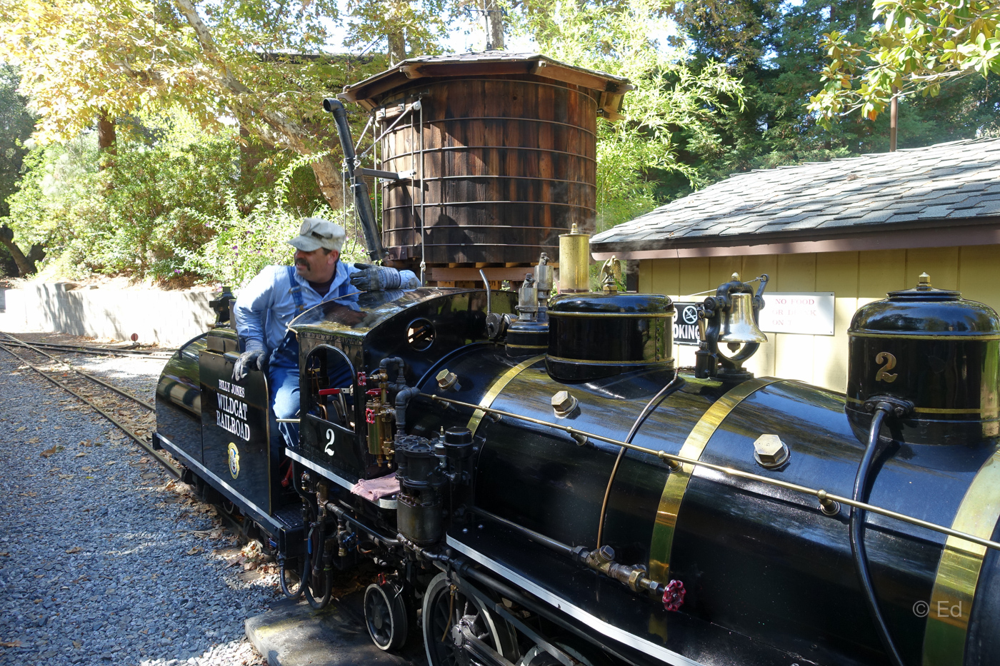
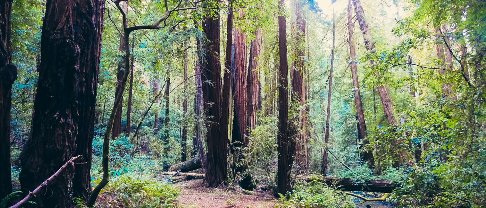

Travel Sites in Northern California
북캘리포니아에 지내면서 돌아다닐 만한 장소를 모아보았습니다.
San Francisco 주변
-
Lombard Street
영화에도 종종 나오곤 했던 꽃이 피어있는 언덕길입니다. 보시면 '아~' 하실 거에요. 관광객이 많아서 정신이 없긴 하지만 잠깐 들렀다 가기엔 좋습니다.
-
Golden Gate Bridge
샌프란시스코의 상징이라 할 수 있죠. 영화에서 몇번이나 부서진건지.. 앞으로도 계속 폭파되고 부서질것만 같은 금문교입니다. 금문교를 한눈에 보고 싶다면 Hawk Hill에 올라가서 보세요.
금문교 남단의 군인기지였던 곳도 좋습니다.
-
Pier 39
언제부터인지 샌프란시스코 관광에서 빼놓을 수 없는 곳이 되었는데, 크루즈를 탈 것이 아니면 그다지 추천하지 않는 곳입니다. 부두에 늘어선 음식점과 가게가 전부인 그저 그런 곳이죠. 다만 크루즈를 타고 금문교나 알카트라즈를 보실려면 들러야 겠죠.
-
Market Place
Pier 1 에 있는 건물인데 가는 길에 잠깐 들러서 커피를 마시거나 부두 산책을 하기 괜찮은 곳입니다.
-
Twin Peak
샌프란시스코 북쪽을 한눈에 볼 수 있는 언덕입니다. 저녁에 올라가서 샌프란시스코 야경을 보는 것 만으로도 충분히 가치가 있습니다. 다만 바람막이는 꼭 가져가세요. 바람이 시도때도없이 강하게 불어서 반팔만 입고 갔다가는 얼마 못버텨요~
-
Ocean Beach
도로 옆으로 길게 늘어선 해변에서 서핑하는 모습을 보고 있노라면 마음의 평화가 절로 찾아오는 곳입니다. 다만 바다 말고는 볼 것이 없으니 도시의 시끌벅적한 분위기를 좋아하시는 분은 심심하실 것 같아요.
근처의 Thanh Long에서 튀긴 게를 드셔보세요.
-
North Beach
Pier 39를 경계로 Columbus Ave 근처를 일컫는데요. 이 중 Washington Square Park 주변 지역을 Little Italy 지역이라 부르는데 볼거리 먹을거리가 많습니다.
-
San Francisco 동물원
아이들과 함께 여행하는 중이라면 동물원 구경도 괜찮습니다. 다만, 동물원이 그리 크진않구요. 다른 동물원을 자주 다니셨다면 재미가 없을 수도 있겠네요. Oakland Zoo 가 더 크고 괜찮다는 평이 많습니다.
-
Golden Gate 공원
De Young 박물관, Japanese Tea Garden 등 볼거리가 많고, 산책로도 다양한 공원입니다. 이 비싼 샌프란시스코 땅에 이렇게 넓은 공원을 조성해두고 그대로 둔다는게 놀라울 정도입니다. 하기사, 맨하탄 그 비싼 땅에도 Central Park가 있긴 하네요.
-
Palace of Fine Arts Theatre
The Rock 영화에도 나오고, 2015년 Big Eyes 영화에도 나오는 등, 여러 영화에 자주 등장하는 장소입니다. Golden Gate Bridge 바로 옆에 있으니 꼭 들렀다 가세요.
-
Lands End
Golden Gate Bridge를 벗삼아 바닷길을 따라 걸을 수 있는 산책로입니다.
-
Half Moon Bay : Ritz-Carlton Hotel의 바닷가 카페
리츠 칼튼 호텔에서 바다를 바라보며 여유롭게 커피 한잔 할 수 있는 곳입니다. 밤이되거나 겨울 시즌에는 모닥불 (개스로 켜는 불) 을 피우기에 마치 캠핑하는 듯한 느낌을 받으며 경치 구경을 할 수 있습니다.
조금 더 위쪽으로 가면 매버릭(Maverick) 근처에서 게잡이도 할 수 있습니다.
-
Coffee Shops
샌프란시스코 내에는 자생하는 커피가게가 많습니다. 그중 손에 꼽으라면 Blue bottle, Philz, Four Barrel 정도가 있지만 그 이외에도 숨은 커피가게가 많아요. 일단 Blue bottle은 꼭 드셔보라고 하고 싶네요.
-
Grace Cathedral
-
기타 음식점
Shanghai Dumpling Shop : 줄이 매우 길어서 한시간은 기다려야 합니다.
Silicon Valley 주변
-
Vasona Park

산타크루즈 가는 길에 있는 큰 호수 공원입니다. 다른 공원과는 별반 다를 바 없지만, 하나 독특한 것이 있다면, 공원 내에 작은 증기기관차가 다닌다는 점입니다. 어린 아이가 있다면 꽤 좋아할 테구요. 어른이 타기엔 그저 그런 기차일 뿐입니다.
정말 제대로 된 증기기관차를 타고 싶다면 Felton에 있는 Roaring Camp Railroad에서 기차를 타서 산타크루즈 해변까지 다녀오는 것이 좋습니다.
-
Stanford University
잘 알려진 스탠포드 대학교 교정을 걸어보면서 '내 자녀는 여길 다니면 좋겠다!' 라는 꿈을 한번 품어보는 즐거움을 누릴 수 있습니다(?). Oval Park가 유명하구요. 입구로 가는 University Avenue 를 둘러보는 것도 하나의 즐거움입니다. 시골같은 실리콘벨리 지역에서 그나마 좀 도시풍이 나는 곳이지요.
-
Children's Discovery Museum
-
Skyline Boulevard
실리콘벨리 서쪽 산등성이를 타고 드라이브를 즐길 수 있는 곳입니다. 약간 커브길로 이뤄져있어 모터사이클 타는 사람을 많이 볼 수 있죠. Route 92와 Route 84가 만나는 곳에 있는 Alice's Restaurant 에서 맛있는 햄버거도 드셔보세요.
Santa Cruz
- Big Basin State Park
-
Roaring Camp Railroad
Vasona Park의 증기기관차는 공원 관람용 유아 기차인데, 여기 Roaring Camp Railroad의 기차는 제대로 된 기차입니다. 가끔씩 1년에 한번 토마스 기차가 운행하는데, 그건 정말 짧고 그냥 그렇구요. 차라리 산타크루즈 해변까지 가는 기차를 타시는 것이 더 낫습니다. 레드우드 숲 향기를 맡으면서 기차를 타는 기분이 꽤 좋습니다.
-
Boardwalk
산타크루즈 해변에 있는 놀이공원인데, 그다지 재밌는 지 모르겠습니다. 다만 해변가이다보니 독특한 풍경이라 한번은 가볼만 합니다.
-
Capitola
좁은 지역이지만 외국의 분위기가 물씬 나는 해변가 도시입니다. 저도 종종 가서 돗자리 펴고 아이들과 해변에서 노닥거리다 오는 곳인데요. 요즘은 좀 가기가 껄끄러운게, 주차하기가 너무 어렵습니다. 그래서 차라리 10달러 더 내고 바로 옆 New Brighton State Beach로 가는 편입니다.
-
New Brighton State Beach
Capitola 바로 옆 주립공원인데요. 10달러를 내야지만 들어갈 수 있습니다. 캠핑장을 예약했다면 내지 않아도 되구요. 길고 긴 해변과 파도를 마음껏 즐길 수 있는 곳입니다.
-
Verve
샌프란시스코에 Blue Bottle이 있다면, 산타 크루즈에는 Verve 커피가 있습니다. Seaside와 41th 두곳에 있는 데, 두 곳 모두 근처에 볼거리가 있어서 어느 한 곳 들러서 커피도 드시고 주변 구경도 하시면 좋을 것 같아요.
Monterey and South
-
Monterey Bay Aquarium
Monterey 는 볼 거리가 많이 있는데, 한번은 수족관을 가보는 것도 좋을 것 같습니다. 연간회원권을 구입해서 1년동안 종종 다녔는데, 두세번 가고 나니 그게 그거같더군요. 거의 수족관이 목적이 아니라 바다 구경이 목적이 되어버렸습니다.
-
Fishermen's Wharf
샌프란시스코의 Pier 39 과 비슷한 분위기의 부두입니다. 역시나 먹을것 외에는 별다른 게 없구요. Whale Watching 배가 여기서 출발을 많이 하는데, 제 철에도 고래를 가까이서 보기는 쉽지 않다고 하네요.
-
Lovers Point
Pacific Grove 가 시작되는 지점인데, 여기가 멋진 풍경과 작은 해변이 어우러져 잠시 쉬기 정말 좋습니다. 산타크루즈보다 좀 더 멀리 가고 싶을 때 이곳에 가서 아이들과 모래놀이도 하고 해안 도로를 따라 17 miles 까지 드라이브도 하고 옵니다.
-
17 Miles (Pebble Beach Golf Course)
골프를 아시는 분이라면 누구나 알고 있을 Pebble Beach Golf Course가 있는 17 Miles Drive 입니다. 길이 17마일이라서 이름 그대로 17마일 길이구요. 중간중간 좋은 골프코스와 해변이 있습니다.
17마일을 대표하는 Lone Cypress 나무는 꼭 한번 보세요~
-
Carmel Beach & Carmel-by-the-Sea
17 마일 길 바로 옆에 있는 카멜입니다. 전 17마일의 해변보다 카멜의 길거리와 바닷가가 더 마음에 듭니다. 맛있는 음식점도 많고 (예약 필수!) 해변에서 놀기도 좋아요.
-
Big Sur
PCH (Pacific Coast Highway) , 캘리포니아 하이웨이 1 으로 불리는 길을 따라 가면 Big Sur 지역이 나옵니다. 이 도로를 타고 그대로 계속 내려가고 싶을 정도로 멋진 드라이브 길입니다. 중간에 유명한 Bixby Bridge, McWay Falls 등 여러 볼거리도 많고, 시간이 된다면 하이킹 할 수 있는 곳도 무척 많습니다. 1박 이상으로 여행 계획을 잡아서 몬터레이 + 빅서를 다녀오는 코스는 정말 강력히 추천합니다.
East
-
[Yosemite National Park][yosemite-np]
캘리포니아를 대표하는 도시를 꼽으라면 San Francisco와 Los Angeles 가 비등한 수준입니다. 캘리포니아 주도인 Sacramento는, 주도인지 모르는 사람이 많을 정도로 인지도가 없죠. 자연 경관 중에 하나를 꼽으라면 단연코 요세미티 국립공원이 일순위로 꼽힐 겁니다. 수려한 자연경관과, 멋드러진 폭포, 그리고 유명한 하프돔과 요즘들어 인지도를 높여가는 El Capitan 까지 볼거리가 지천에 널려있습니다.
그냥 방문해도 좋지만, 캠핑으로 2박3일 머문다면 매우 색다른 경험이 됩니다. 많은 캠핑장이 요세미티 국립공원 내에 있음에도 불구하고, 그 모든 캠핑장이 예약이 시작되는 5개월 전부터 매진이 됩니다. 사이트가 열리는 매달 15일 아침 7시 (PST)가 되자마자 1분만에 한달치 모든 캠핑 사이트가 바로 예약이 될 정도로 인기가 높습니다.
요세미티 국립공원에서 추천하는 볼거리는 Tenaya Lake, Glacier Point, Tuolomne Meadows, Mariposa Grove, Mono lake 정도인 것 같네요.
-
Lake Tahoe
여름이면 여름, 겨울이면 겨울대로 볼거리, 즐길거리가 있는 캘리포니아와 네바다 주에 걸쳐있는 큰 호수입니다. 여름에는 물놀이 (호수 물이 정말 찹니다) 삼림욕이 인기고, 겨울에는 스키를 타러 가거나, 정말 눈 구경을 제대로 하고 싶을 때 갑니다.
여름, 겨울 모두 가 봤는데 둘 다 좋았네요. 다만, 쉼이 목적일 때에 좋습니다. 열심히 돌아다니며 구경하는 것에는 조금 안맞을 것 같아요. 캐빈을 하나 빌려서 며칠 느긋하게 쉬다 오는 데에 알맞은 곳입니다.
North
- Napa Valley
- Sonoma
-
Sausalito
부자동네인 Tiburon (네.. 그 현대의 티뷰론과 같은 이름이에요) 을 바라보며 바닷가를 걸을 수 있는 작은 도시입니다. 사실 샌프란시스코를 멀리서 바라볼 수 있다는 것 말고는 그다지 특징적인 것이 없는 동네이기도 합니다. 어떻게 보면, Hawk Hill이 더 나을지도 모르겠네요. :)
-
Muir Woods National Monument

샌프란시스코에서 가장 가까이 있으면서 레드우드 원시림을 볼 수 있는 곳입니다. 혹성탈출 진화의 시작에서 시저가 마지막에 샌프란시스코를 바라보는 그 숲입니다. 이보다 더 많은 레드우드를 보려면 위로 8시간 운전해서 Redwoods National Park까지 가야 합니다. 그럴 시간이 되지 않으면 가볍게 이곳 Muir Woods를 산책하는 것도 좋아요. 주차하기가 까다로우니 일찍 가는 것이 좋습니다.